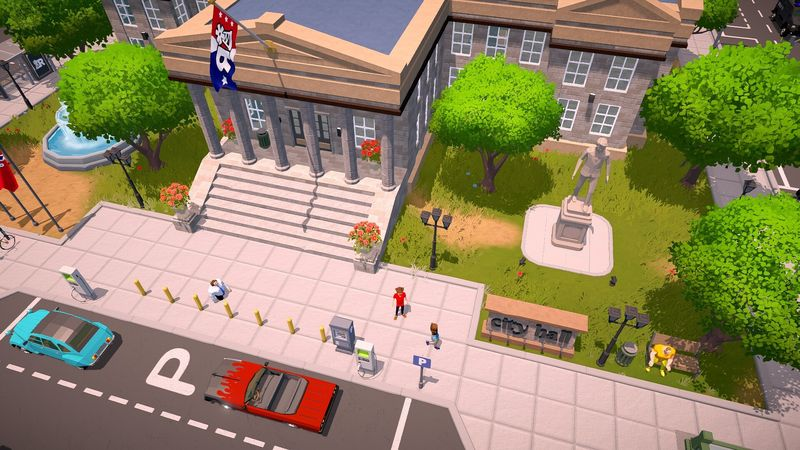

The Ranchers Beginner's Guide: Your First Week on the Ranch

Your first 7 days: a day-by-day roadmap
The Ranchers gives you an open world, a run-down property, and very little hand-holding after the tutorial. That's freedom — and a trap. New players who wander for their first week end the month broke; players who follow a simple sequence end it with a working money engine. Here's the sequence we'll be running ourselves on day one of Early Access, refined from the demo and a decade of genre experience.
Day 1 — Scout, don't spend
Resist every urge to buy. Walk your entire property and note three things: where your best soil is, where water is, and where the road to town runs. Then ride into town and locate the general store, the seed supplier, the animal dealer, and the notice board. In farming sims, travel time is a hidden tax on every decision — a selling point that's 10% better but twice as far away is usually the worse deal. Finish the day by clearing and tilling a small plot near your house, even just a dozen tiles, so planting can start first thing tomorrow.
Day 2 — Plant your first money loop
Buy seeds for the fastest in-season crop you can afford and plant your entire prepared plot. Fast, cheap crops are the correct first investment in virtually every farming game: they turn a small amount of cash into more cash within days, and they teach you the grow–water–harvest–sell loop while the stakes are low. Water everything before you do anything else each morning — an unwatered day is a lost growth day in most genre implementations.
Day 3 — Follow the quest threads
Tutorial and introductory quests exist to subsidize you. They typically hand out tools, materials, or currency at a steep effective discount, and they introduce systems (building, animals, town relationships) in the order the developers intend you to learn them. While your first crop grows, questing is the highest-value use of your daylight hours.
Day 4 — Start a second skill
The Ranchers has announced fishing, mining, and foraging alongside farming. Pick one as your secondary activity for rainy days and evenings. Fishing is the classic choice: it needs no land, no seeds, and converts pure time into sellable goods. Don't try to level everything at once — a secondary skill is a complement to your farm, not a competitor.
Day 5 — First harvest, first reinvestment
When your first crop comes in, sell it — all of it. New players hoard produce "for later"; later never pays as well as reinvesting now. Split the proceeds roughly into thirds: one third back into seeds (a bigger plot than last time), one third toward your first infrastructure goal (a storage or building upgrade), and one third kept as a cash reserve. That reserve is not optional — it's what lets you buy animals safely next week.
Day 6 — Expand the plot, meet the town
Clear and till your second field while crop number two grows. In the afternoon, do a deliberate town loop: introduce yourself to NPCs, check the notice board for requests, and learn who sells what. Town relationships are a slow-burn system in the genre — gifts and conversations unlock discounts, recipes, and quests weeks later, and the players who start early never regret it.
Day 7 — Plan your first animal purchase
End the week by doing math, not shopping. Check what your crops are actually earning per day (our profit calculator does this in seconds), confirm you can cover animal upkeep from that income with room to spare, and decide which starter animal fits your budget. If the math doesn't work yet, that's fine — run one more crop cycle. Livestock bought too early is the number one ranch-killer in the genre.
Resource priorities: what matters first
With limited money, energy, and daylight, the order you invest in things matters more than the things themselves. Our recommended priority stack for the first month:
- Time-saving infrastructure. Anything that reduces walking, watering, or inventory trips pays for itself every single day. A well-placed chest or a closer field layout is worth more than a shinier tool.
- Seed capital. Money that becomes more money within one crop cycle outranks everything except survival purchases.
- Tool upgrades. Upgrade the tool you use most (usually the watering can or hoe equivalent) first. Each tier typically saves energy per use, and energy is your true daily budget.
- Animals. Only once crops cover upkeep with margin.
- Decorations and cosmetics. Last. Always last.
Known gameplay systems, explained
Based on the free demo and RedPilz Studio's official updates, these are the pillars of The Ranchers as announced so far. We'll verify exact mechanics and numbers in-game at Early Access launch.
Energy and time
Like most life sims, your day is bounded by a clock and an energy pool: every swing of a tool costs stamina, and sleeping restores it. The practical rules: eat to replenish energy when available, front-load your most exhausting chores (watering, clearing) to the morning, and stop scheduling new projects late in the day. Passing out from exhaustion usually carries a penalty — end days deliberately, not collapsed in a field.
Tools and upgrades
Expect the genre-standard toolkit — hoe, watering can, axe, pickaxe, fishing rod — with tiered upgrades at a smith or workshop. Upgrades matter twice: they do the job faster and cheaper in energy, and higher tiers often unlock new interactions (breaking bigger rocks, tilling tougher ground). Prioritize the tool touching your main income loop.
Seasons and crops
Crops are seasonal: each grows only in its season(s), and seeds planted outside the window are wasted. The crop database lists seasons for every entry we know so far. Build the habit of checking the calendar before every seed purchase, and pre-buy next season's seeds at the end of the current one so day one of a new season starts with crops already in the ground.
Town, NPCs, and relationships

The Ranchers' town isn't decoration: announced systems include shops, community requests, and relationship-building with residents. Relationships in the genre compound quietly — early investment pays out as discounts, unlocks, and story content over months of in-game time. A gift on a birthday is worth several on an ordinary day; learn schedules and favorites as you go.
Building and ranch expansion
Construction and upgrades turn your plot from a homestead into an operation: barns and coops for animals, storage for logistics, and machines if processing ships with Early Access. Building costs are front-loaded, so fund buildings from surplus crop income — never from next season's seed money.
Co-op
The whole game supports 1–4 player online co-op on a shared ranch. Co-op doesn't just add hands; it changes the optimal opening entirely. Read our dedicated multiplayer & co-op guide before your group's first session.
The 10 most common beginner mistakes
- Buying animals before you can feed them. The animal, its housing, and its daily upkeep all cost money before it produces anything. Fund livestock from surplus, not hope.
- Planting out of season. A crop that misses its season window is dead money. Check the season column in the crop database every single time.
- Hoarding harvests. Produce in a chest earns nothing. Sell, reinvest, repeat.
- Skipping the quests. Intro quests are subsidized progression — free tools, materials, and tutorials in the intended order.
- Overplanting your watering capacity. A field you can't water daily is a field that grows slower than a smaller one you can. Scale planting to your morning routine, not your ambition.
- Ignoring travel time. The distant buyer paying 5% more is usually a worse deal after the round trip. Sell close unless the margin is dramatic.
- Upgrading the wrong tool first. Upgrade what you use every day, not what looks coolest.
- Running out of energy at noon. Budget stamina like money: heavy chores early, light chores late, eat when you can.
- Neglecting the town. Relationships compound. Ten minutes a day with NPCs pays off for months.
- Expanding before stabilizing. One boring, reliable income loop beats three exciting half-built ones. Grow what works until it's automatic, then diversify.
Beginner FAQ
What's the very first thing I should do in The Ranchers?
Scout your property and town before spending anything, then till a small plot and plant the fastest in-season crop on day one or two. Starting your first harvest clock early is the single biggest accelerator in the early game.
Should I play solo or in co-op first?
Both are fully supported. Solo teaches you the systems at your own pace; co-op (1–4 players) multiplies your labor but adds coordination overhead. If your group is new, have everyone skim this guide and the co-op guide first.
How do I make money fast at the start?
Fast-cycle crops, sold immediately, with profits reinvested into more plots. Add fishing as a zero-investment side income. The full framework is in our money-making guide.
When should I buy my first animal?
When your crop income covers the animal's upkeep with a comfortable margin — typically week two for a disciplined start. Check the math in the profit calculator before you buy.
Do seasons really matter?
Yes — crops only grow in their listed season, and a mistimed planting loses the seeds entirely. Plan season transitions a few days ahead and pre-buy next season's seeds.
Is this guide based on the final game?
It's based on the free demo and official dev updates. We avoid inventing numbers, and we'll update every page with confirmed in-game data within hours of the July 31, 2026 Early Access launch.
Related guides
- Money-Making Guide — turn your first harvest into a compounding income engine.
- Multiplayer & Co-op Guide — role splits and schedules for 1–4 player ranches.
- Crop Database — seasons, growth times, and profit per day for every known crop.
- Profit Calculator — rank any crop or animal by profit per in-game day.